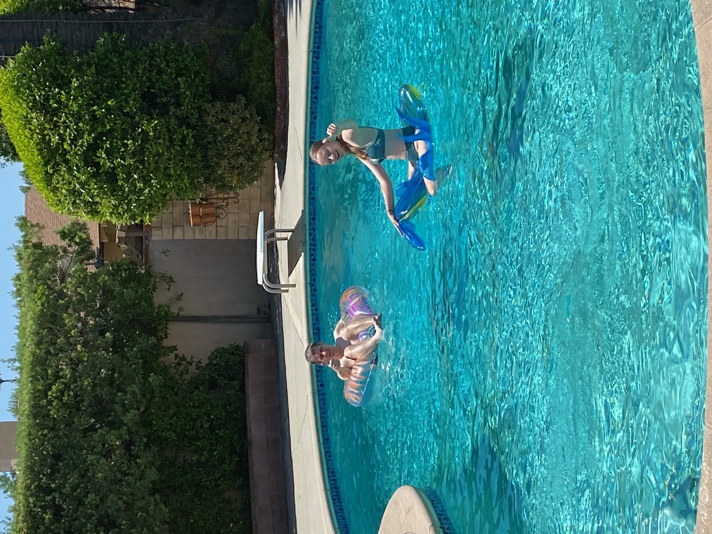
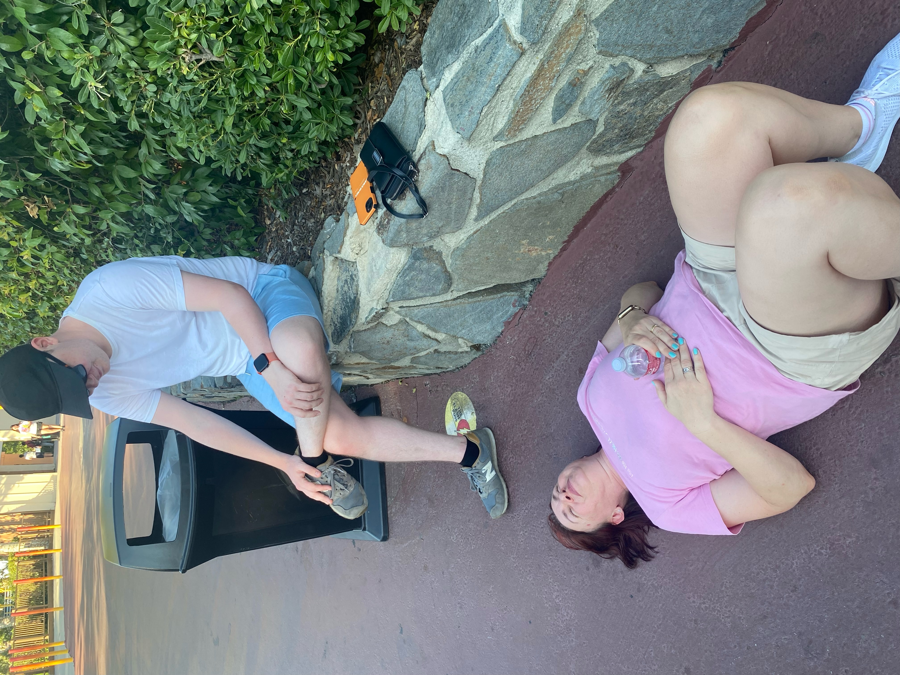

As you might expect after yesterday, we were a bit knackered so no rushing this morning. We were aiming for a 2:43 set off and were a little late.
The morning was spent variously reading, writing blogs, watching Dance Moms, talking with friends in the UK, swimming and sitting in the hot tub.

There was little enthusiasm for another day at Three Flags. It was just past the hottest part of the day, but still 37C in the shade when we arrived. We found the Flashpass room to activate our 1 free ticket to jump the queue. I joked that we might just stay there all day as the aircon was lovely. Looking back, it wasn’t really a joke. Scorchio!
We all wanted to ride Wonder Woman (the coaster, not Gal Gadot you dirty minded people). We sweated as we walked there, filling up water bottles as we went. Then we sweated in the queue. There was no aircon and not even any fans as the queue zigzagged back on itself. About 5 minutes before the ride, we had to put our bags in a locker, which didn’t have lock, so really just a shelf with an unlockable door. I decided to risk carrying my phone and wallet on the ride rather than leaving it there. Very poor.
The ride looked great from the outside, a single rider wide on a single track. I got the front seat (because no one else wanted it). We got pulled up and about 80% of the way up the first hill the ride stopped. I could imagine Freya panicking, but we heard the ride operator telling off someone for having a phone out to film the ride. It took a while but eventually we got going again. It was a pretty extreme ride and something different having only the single track. We were all glad to have ridden it. And even more pleased when we found out our bags hadn’t been stolen.
Batman was next. Freya didn’t fancy it as it looked like Nemesis. It was exactly like Nemesis so we three loved it. It was walk-on, thank goodness as the queue was a metal box with no aircon. We needed frozen treats, which definitely helped.
The only remaining ride we all wanted was West Coast Racers, which had 4 launches and was a duelling twin track ride. After much grumbling and stress by me, I managed to sort the queue jump tickets, so didn’t have to wait too long. At the loading station (with more bag thieving opportunities) we realised how the ride worked. It is actually a single track (like the Grand National in Blackpool) and you go round twice, once starting on the right and once starting on the left. The launches weren’t very extreme but the heat was. It broke the oldies, particularly Alison who said she just wanted Small World and then had a little lie down on the floor.

There was then much debate about which rides we wanted to do and were capable of getting through. There probably was a combination possible but it was just too hot to care. We did all agree not to come back the following day for what would have been our third day there. We only managed 6 rides over 2 days.
Overall, Six Flags is pretty poor. It’s generally 5C hotter than Disney normally (about 20C hotter in the queues), about 20% as efficient as Disney, about 10% of the atmosphere of Universal and Disney, and about 5% as cheery members of staff (see comment above about queue temperatures, in defence of Six Flags staff). And half of it is shut, hence Three Flags. It’s a good job an annual pass cost less than a day at either Disney or Universal.
We found the car (in the middle of a big car park - no pictures of Mickey Mouse or location references to help us) and aimed for In-N-Out Burger. We walked through it and perused the menu. Then walked to Wendy’s and ate there. It was like walking through a McDonalds full of teenagers taking all the tables that only does cheeseburgers and then eating in Five Guys with a free booth seat. Yummy.
Back to the ranch via the supermarket for afters. The sink had been blocked as we left as was still blocked when we came back. There’s a food blitzer in one sink and a normal plug in the other. I think we must have used it wrong. After some time under the sink, I managed to twist the waste pipes to clear the blitzed celery, but not without a lot of water coming out and missing the waiting plastic box receptacle. Paper towels, heat and time fixed that and all is fine now.
We sat out in the night next to the pool for a bit, drinking some questionable Chardonnay until Jake got bitten and we came inside. Might go ice skating tomorrow.